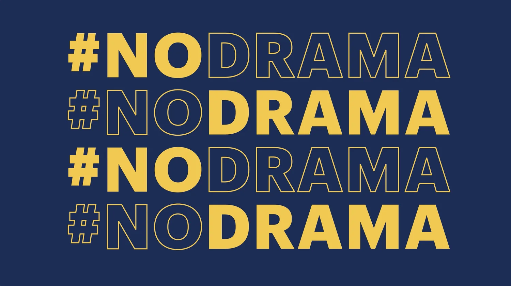

Malwarebytes 2022 RSA Conference theater presentation
How do you draw the right people into your booth, get them excited about your #NODRAMA cybersecurity story, and convert them into qualified leads—all in a noisy, intense, and highly-competitive expo environment? At the 2022 RSA Conference, Brass Tack did all three with an engaging, relevant, and dynamic live theater presentation that played a key role in helping Malwarebytes exceed all of their lead targets and engagement goals.